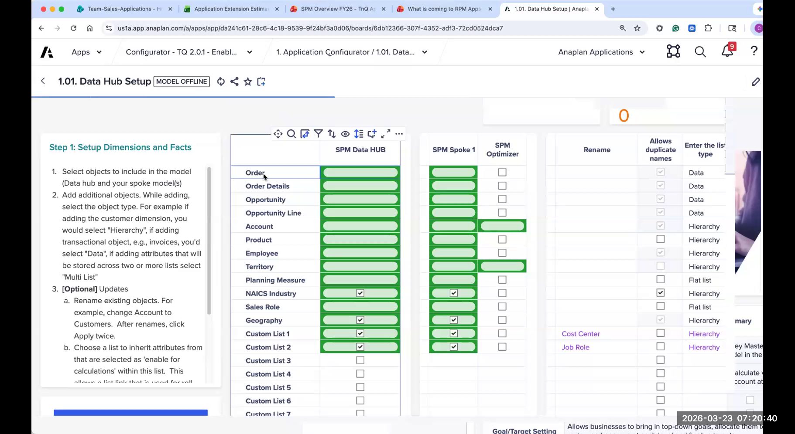
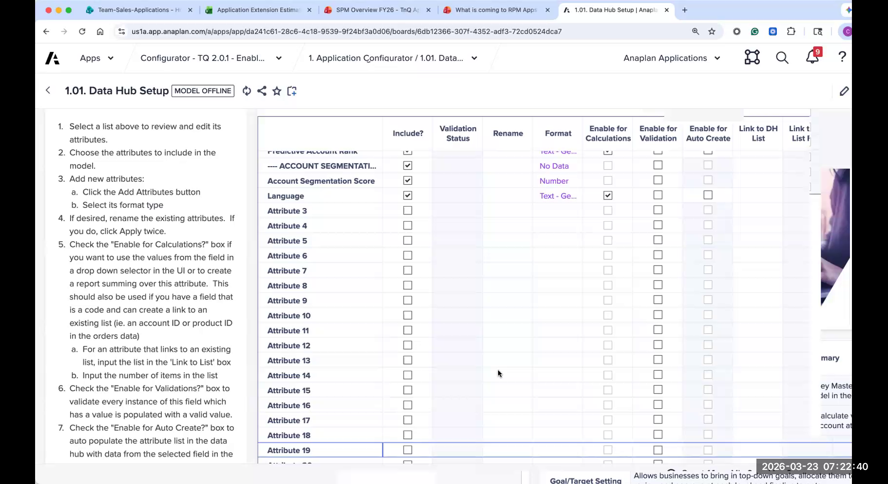
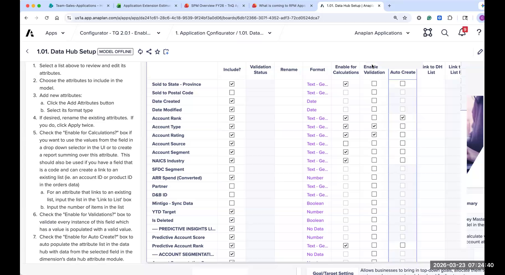
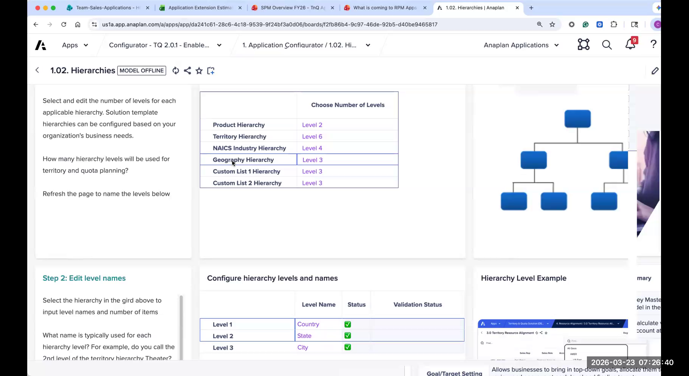
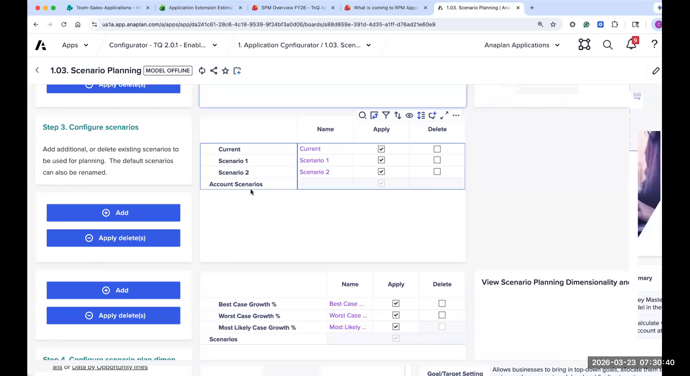
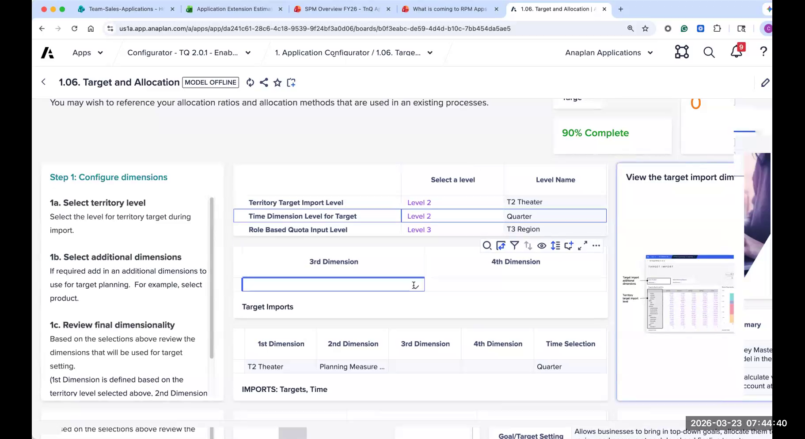
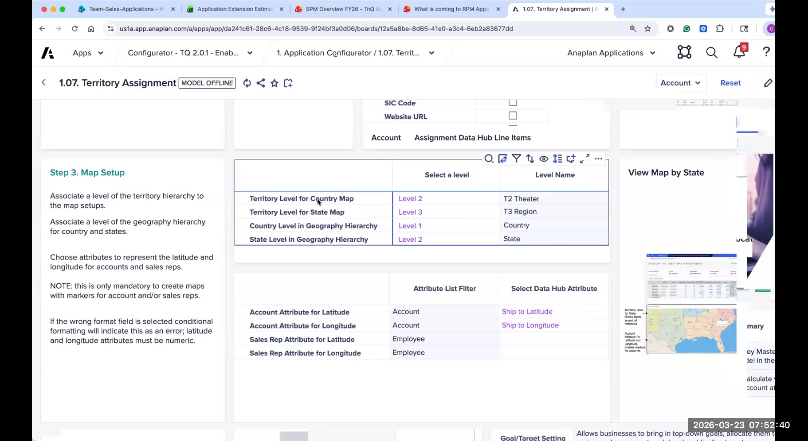
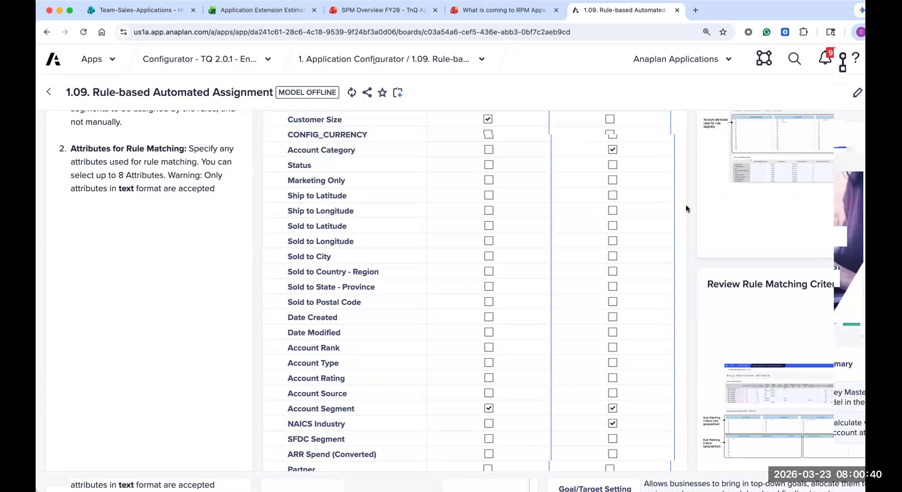

Lab: Configurator Exercise
Hands-on configuration using the CloudWorks scenario dataset
Scenario: CloudWorks Technologies
CloudWorks Technologies is a fictional B2B SaaS company that sells cloud infrastructure and developer tools to mid-market and enterprise customers. They have approximately 180 sales reps across North America and EMEA, organized into a 4-tier territory hierarchy. They currently manage their territory planning and quota-setting in Excel and are moving to Anaplan T&Q for the coming fiscal year.
You have been brought in as the Anaplan delivery lead to complete the T&Q configuration for CloudWorks. The customer has completed Session Zero and provided sample data. Your job is to work through the configurator and complete the key configuration pages using the information provided below.
Complete the following configurator pages for CloudWorks: Data Hub Setup, Hierarchy Setup, Transactional Data Routing, Planning Measures, Target & Allocation, and Territory Assignment. Work independently or in pairs. Debrief with the group at the end.
CloudWorks — Company Profile
Organization
- Sales reps: 180 AEs across NA and EMEA
- Overlay reps: 25 SEs (pre-sales engineers)
- Markets: Mid-Market (<1000 EE) and Enterprise (1000+ EE)
- Products: Compute Platform (primary), Developer Suite (secondary)
Hierarchy
- Tier 1: Global
- Tier 2: Theater (NA, EMEA)
- Tier 3: Region (e.g., US-West, US-East, UK, DACH)
- Tier 4: Territory (individual rep territories)
Planning Measures
- Primary: ARR (Annual Recurring Revenue) — currency
- Secondary: New Logos — count
- Fiscal Year: February – January (FY starts Feb 1)
- Planning granularity: Quarterly
Data & Integration
- CRM: Salesforce (source of actuals and account data)
- Data Hub: New (no existing Anaplan for SPM)
- Integration: ADO (IT team confirmed readiness)
- Historical actuals: 2 years (FY23, FY24)
Dataset Files
The following sample data files have been provided by CloudWorks. These are available in the lab workshop folder (distributed by the facilitator). You will reference these files to make configuration decisions — you will not load them into the configurator during this exercise.
| File | Description | Rows | Key Fields |
|---|---|---|---|
CW_Accounts.csv |
Full account list from Salesforce | ~4,200 | Account ID, Name, Industry, Segment, Employee Count, HQ State, Country, Current ARR, Potential Spend |
CW_Territories.xlsx |
Territory hierarchy (all 4 tiers) | ~220 territories | Territory Code, Territory Name, Region, Theater, Type (MM/Ent) |
CW_Resources.csv |
Sales rep roster with territory assignments | ~205 reps+SEs | Rep ID, Name, Title, Territory Code, Start Date, Ramp Status |
CW_Actuals_FY23.csv |
FY23 closed-won revenue by account by quarter | ~18,000 rows | Account ID, Quarter, ARR Amount, New Logo Flag |
CW_Actuals_FY24.csv |
FY24 closed-won revenue by account by quarter | ~21,000 rows | Account ID, Quarter, ARR Amount, New Logo Flag |
CW_FY25_Targets.xlsx |
FY25 top-down targets from Finance | ~10 rows | Theater, Total ARR Target, New Logo Target, Q1–Q4 seasonality % |

Mini-Labs
Complete each mini-lab in order. Each one covers a single configurator page. Hit Apply / Calculate after completing each page before moving to the next.
- 1 Navigate to Page 2: Data Hub Setup in the configurator.
- 2 Set Use Existing Data Hub? → No (CloudWorks is a new implementation, no prior Anaplan).
- 3 Set Use ADO? → Yes (IT has confirmed ADO readiness).
- 4 Set Use Flat File Imports? → No (ADO is the primary integration method).
- 5 In the attribute section, enable only these attributes: Industry, Segment, Employee Count, HQ State, Country, Current ARR, Potential Spend. These match the fields in
CW_Accounts.csv. - 6 Disable all other pre-populated attributes not in the CloudWorks account file.
- 7 Click Apply to save.
Only enable attributes that exist in the actual data file. Enabled attributes with no data bloat the Data Hub and slow imports — keep it lean.


- 1 Navigate to Page 3: Hierarchy Setup.
- 2 Set tier count to 4. Verify this matches
CW_Territories.xlsx— count the distinct levels in the file before committing. - 3 Name the tiers: Tier 1 = Global, Tier 2 = Theater, Tier 3 = Region, Tier 4 = Territory.
- 4 Set Fiscal Year Start → February (CloudWorks FY starts Feb 1).
- 5 Set Planning granularity → Quarterly.
- 6 Click Apply.
Open CW_Territories.xlsx and count distinct values at each tier level before moving on. A mis-counted tier is very painful to fix post-generation.

- 1 Navigate to Page 4: Transactional Data Routing.
- 2 Set Source of actuals → CRM (Salesforce).
- 3 Set Routing method → By Account (CloudWorks's actuals are stored at the account level in Salesforce).
- 4 Set Account-to-territory mapping → Account Assignment (actuals follow the assigned territory).
- 5 Set Historical periods → 2 years (FY23 and FY24).
- 6 Click Apply.
What would you do differently if CloudWorks's Salesforce data only had actuals at the rep level, not the account level? Discuss with your partner before moving on.

- 1 Navigate to Page 5: Planning Measures.
- 2 Set Primary measure name → ARR, type → Currency (USD).
- 3 Add Secondary measure name → New Logos, type → Count (Integer).
- 4 Enable seasonality for ARR → Yes (Finance provided Q1–Q4 percentages in
CW_FY25_Targets.xlsx). - 5 Set seasonality for New Logos → No (uniform distribution).
- 6 Click Apply.
Adding a planning measure post-generation requires significant rework across dozens of modules. If in doubt, add it now as inactive — removing an unused measure is trivial; adding one later is expensive.
- 1 Navigate to Page 9: Target & Allocation.
- 2 Set Target entry tier → Tier 2 (Theater). Finance provides targets at the Theater level (NA, EMEA).
- 3 Enable allocation methods: Weighted by Historical Actuals and Manual Override. Leave others disabled.
- 4 Enable over-allocation → Yes, max 115%.
- 5 Enable approval workflow → Yes, 2 stages: Regional Manager → Theater VP.
- 6 Leave adjustment reasons as defaults.
- 7 Click Apply.
Confirm no extra dimensions are added. CloudWorks = 2 measures (ARR, New Logos) + quarterly granularity. That's it. Do not enable annual or monthly breakdowns.

- 1 Navigate to Page 10: Territory Assignment.
- 2 Enable Manual Assignment → Yes.
- 3 Enable Geographic Mapping → No (CloudWorks territories are not geo-defined).
- 4 Enable Rule Engine → Yes.
- 5 Enable Optimizer → No (not in scope for this implementation).
- 6 Enable Split accounts → Yes (enterprise accounts can span multiple territories).
- 7 Set reassignment governance: Sales Ops can reassign; approval not required for individual accounts.
- 8 Click Apply. Then navigate to Page 14: Rule Engine Setup and confirm Industry and Segment are selected as rule attributes — they must match what you enabled in Data Hub Setup.


Debrief Questions
When you've completed the exercise, discuss the following questions with your group:
- Which configuration decision was the hardest? What additional information would you have asked the customer?
- If CloudWorks had asked for a third planning measure (Services ARR), what would your recommendation be? Would you add it now or leave it out?
- What would change in your configuration if CloudWorks had an existing Anaplan workspace with a V2 T&Q deployment?
- On Page 5 (Planning Measures) you saw a checkbox for "Enable Quota Composition." When would you check this box for CloudWorks?
- The Rule Engine on Page 14 requires attributes — you enabled Industry and Segment. What's a real rule you'd write for CloudWorks using those attributes?
When the group reconvenes, the facilitator will walk through a reference configuration for CloudWorks and discuss common decision points and tradeoffs. There are often multiple valid approaches — the goal is to understand the reasoning behind each choice.